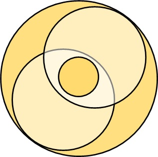

Мы начинаем новую серию "Уроков" и публикаций, связанных с переводом и системной интеграции, в связи с теми Системами, которые являются частью уже имеющегося и накопленного материала и практического опыта, связанного с раскрытием Книги Зоар посредством начавшегося "в реальности здесь и сейчас" "конечного исправления", происхождение которого является и будет являться реальностью, формирующей "повестку" для "духовных ищущих и идущих", то есть адептов различных форм истинных Учений, являющихся великими Эргрегорами, каждое из которых является ветвью единого Древа Жизни, в строении которого заключено все эволюционное развитие человечества как жизненной волны и как непрерывной цивилизации, духовный Корень которой находится в столь возвышенном "уровне сознания", что "даже высшие Ангелы Творца, Свят Благословен Он, ничего не знают об этом Месте" (языком Святого Зоара), опосредуя этим фактом ту относительную величину, на которую нам всем еще предстоит подняться, и активная фаза этого подъема уже началась, и будет длиться как минимум несколько столетий, завершившись исполнением пророчества о "наполнении всей Земли" (т.е. сознания всех людей) "знанием Творца, Свят Благословен Он" (то есть непосредственным видением тождественности между самим собой и всем Человечеством как "коконом" и "точкой сборки", языком К. Кастанеды, которая существует для того, чтобы быть "расширенной на весь кокон, воспламенив разом все эманации, переходя на совершенно иной уровень бытия, не поддающийся описанию"). По сути, мы должны, то есть те из нас, кто достаточно безрассуден и смел, чтобы назвать себя частью авангардного отряда, прокладывающего Путь для всего Человечества в целом, поскольку частное и общее подобны, но большинство всегда выбирает ставить ноги на твердую почву проложенных и испытанных поколениями путей и решений, поэтому кто-то обязан брать на себя и выполнять эту работу, открывая "будущий мир" чуть раньше, чем он становится очевидным обывателю, (или даже "продвинутому" в духовном смысле, но придерживающемуся консервативного подхода к порядку раскрытия Творцом, Свят Благословен Он, предсказанного пророками "настоящего", этим фактически не давая себе перейти границу между тем прошлым, которое ушло и никогда не вернется, и тем будущим, которое уже готово стать "настоящим" здесь и сейчас в повседневной жизни тех "адептов", которые имеют смелость иметь по самым основополагающим вопросам Учения свое собственное, не вписывающееся и противоречащее всему и вся, как минимум, с формальной внешней точки зрения, "особое мнение", и не бояться действовать последовательно и непреклонно, используя имеющееся мнение как ориентир и карту, правильность и эффективность выбора которой подтверждается по мере восхождения по лестнице собственных состояний духовного развития и роста как "взрослого" в истинном смысле духовного видения реального мира ("накладывающегося" на видимый всеми, и считаемый большинством "единственной объективной реальностью" мир иллюзии), раскрывая новые грани и новые цели, достигая большего, чем могли представить, не находясь еще на новом освоенном уровне сознания и понимания интегральности и взаимосвязанности всех происходящих во всех воспринимаемых человеком мирах явлениях и процессах, в единый процесс Эволюции Человеческого Духа, процесс которой повторяет форму движения основополагающей Силы Мысли, лежащей в основе всего Сущего, и называемой "Намерением Духа" К. Кастанедой, "Светом Бесконечности", "Светом АБ-САГ де АК" в Науке Каббала, являющийся восходящим потоком энергии повышения качества сознания, то есть Силой, возвышающей и возвеличивающей (облагораживающей - Ацилут) Душу человека и Человечества бесконечным восхождением в сверкающую Высь, пределы которой не сможет охватить ни один сотворенный разум.
"МИРОВОЗРЕНИЕ
Уважаемый читатель. Лекция записана не на литовском языке, а языком язычества, но словами литовского языка. Читать сложно (NELENGVA), так как есть языческое ВОЛНЫ МОЛЕНИЕ (BANGOS PREGAIDIS – дословно «припетушиная волна"), то есть УДАРЕНИЕ, АКЦЕНТ (KIRTIS) (в НАУКЕ КАББАЛА – ЗИВУГ) тт.е точка и ее волновое движение, как ОДНОГО ЦЕЛОГО.. Точка и ее Волновое движение отделены друг от друга «завитками, в письменном тексте запятыми», поэтому отдельные части предложений между собой не сочетаются, а есть как бы «пропихнутыми» одним из ТРЕХ концов за исключением L;jos-Buk; угла. Такие части предложений связывает только ЛОГИЧЕСКАЯ МЫСЛЬ. То есть ЛЛЛ имели понимание ЕДИНСТВА ТОЧКИ и ЕЕ ВОЛНОВОГО ДВИЖЕНИЯ, как ОДНОГО ЦЕЛОГО, так как МИРОВОЗРЕНИЕ ЛЛЛ это систем СИСТЕМА, а не отдельные комплексы учений."
Источник: LLLIELATU PASAULIEZIURA - Angelika Zelma Tama`s (перевод с литовского свободный авторский)
// З.А.А.: Здесь говорится о свойстве Учений, великих Эргрегоров, строго изолированных на этапе подготовки, и проходящих процесс расконсервации, реновации и интеграции в настоящем этапе великого объединения.
Это свойство – быть инструментом совершения адептом работы, цель которой остается скрытой от него за завесой имеющейся у него идеи себя, стремящегося к тому-то и отстраняющегося от сего-то. Эта идея называется логической мыслью, и является свойством точки, рассматриваемой в аспекте внутренних свойств и процессов. То есть характера происхождения повседневной жизни человеческой личности (включая магов, разумеется). Одновременно с тем, что статично присутствует в уме совершающего работу адепта, его усилия, осуществляемые наперекор имеющимся обстоятельствам и инерции собственного повседневного поведения и мышления, существуют в том объеме реальности, который относительно внутренних сфирот «точки» является «Творцом, Свят Благословен Он», Корнем, Источником и причиной, скрытой от «точки» все время действия. Речь идет о первом и втором внимании, первое из которых является «логической мыслью» и аспектом «точки» как вещи в себе, «материал» этого «мира» - бесплотная фантазия, лишенная авиюта. То есть чувства, которые окрашивают описываемый словами мир в различные цвета отношений, ощущений и ожиданий уже находятся за границами первого внимания в абсолютном смысле, поскольку не являются исключительно эхом от эха, как материал 1ВН, а являются вместе с этим (перед этим) действием, производимым и его чувственным восприятием происходящим в результате совершения действия в новом «пузыре восприятия» - то есть АВАЯ, поскольку действие – это акт проявления воли, а воля это явление, проявляемое строго вопреки тому, что на нее воздействует, поскольку истинная цель второго кольца силы – не дать «внутренним эманациям» слиться с «эманациями в великом» до того, как они приобретут в формируемом Кли четкий вид разделения «кокона» напополам, посредством «стены тумана», и каждая область станет завершенной реальностью, т.е. «миром», находясь в котором, человек, фактически, перестает существовать и одновременно создает себя из решимот, оставшихся от прошлой формы, в результате полного выхода из нее Света, разумеется, в точности так, тогда и таким образом, каким и предполагалось изначально намерением Своего в это Кли «облачения», «первого распространения».
Проявляя волю, то есть используя способность формулировать реальность, задающую аксиоматику «мира разума», в котором все, что происходит, следует из чего-то и влечет за собой что-то, создавая иллюзию непрерывности происхождения чувственного восприятия дублирующим логическим описанием, в центре которого всегда находится «идея себя», то есть образ того, что «я» есть самостоятельный, отдельный и уникальный объект, принимающий решения независимо от внешних факторов, «разговаривая сам с собой», обладающий «сердцем и душой», в связи с которыми объясняется происхождение ощущений, не поддающихся автоматической вербализации и рассудочной классификации, такие как любовь и интуиция. Это описание относится к аспекту «внутренних свойств» точки и называется АВАЯ, этот Мир, позиция точки сборки или пузырь сновидения, замкнутая на себя система по В. Венскому.
Жесткая граница, разделяющая сферы внимания напополам посредством «физического барьера», создается посредством проявления воли, и является транзитом в цепочке АВАЯ, из которых формируется требуемый результат, опосредуемый свойством МИРОВОЗЗРЕНИЯ (Хохма – Наука, ивр) быть СИСТЕМОЙ, имеющей реальность происхождения в двух мирах одновременно, позволяя адепту осуществить транзит самого себя из одной реальности (повседневного мира) в другую (например, через «поручительство» в Круге Жизни). Чтобы таковая система имела подразумеваемый эффект, оба мира должны быть представлены в располагаемой реальности претендента конкретными живыми носителями, взаимодействуя с которыми претендент осуществляет выполнение «мировоззрения» как «целостной системы», то есть системы, имеющей собственную цель, заложенную в описания, служащие фасадом, или инструментальной формой скрытия реально производимой запрограммированным изменениям восприятия работы, которая полностью раскроется адепту только по факту своего завершения и волевого выведения за пределы нового, реально располагаемого, АВАЯ. В которое старая ступень облачается как Кли (АХА»П), то есть как мировоззрение, скрывающее Г»Э, то есть единство реально располагаемой посредством формулировки полезных итогов нового опытного осознания, выполняемой работы «вопреки», облаченной в будущее АВАЯ, когда работа с текущими решимот будет произведена и второе внимание будет задействовано в «хитколелуте» с первым, запечатывая пройденную ступень «физическим» барьером восприятия.